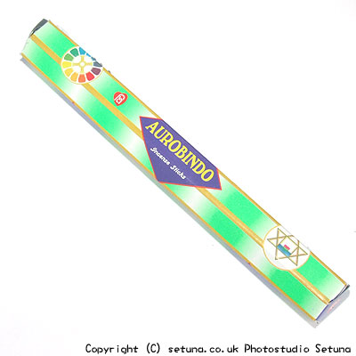

そのままの匂いは沈丁花の花の香りにそっくりです。焚き始めは白檀と乳香とサルビアの花の匂いが混ざったようなとてもいい香りが漂い始めます。まるで、家の中に沈丁花の花が咲き誇る枝を持ち込んで来たような錯覚すら覚えます。ふんわりとして甘めで、日本人好みのする香りだと思います。焚き終わった後は、やはり沈丁花の花と乳香の混ざったような甘く爽やかな香りが残ります。残り香は割合長く残り、部屋全体がうっすらと良い香りで満たされ続けます。私が虜になったお香の一つですね。
